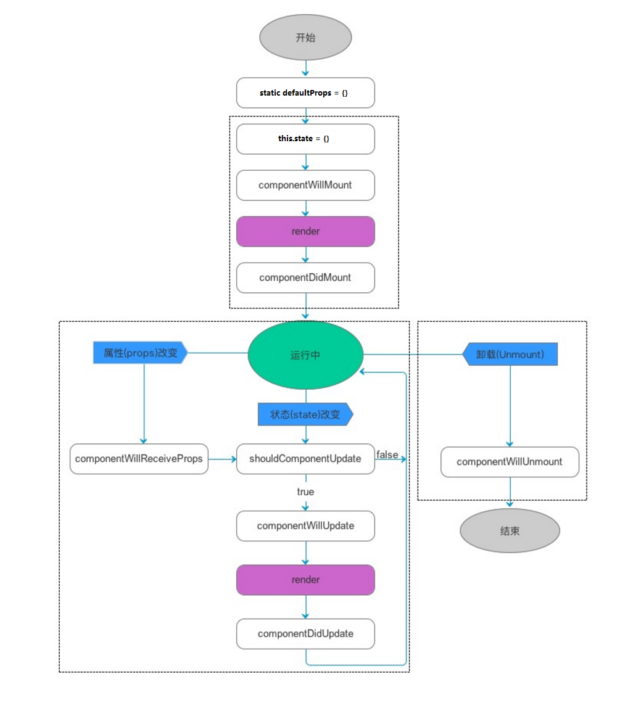

react 基础讲义
搭建环境
基本步骤
- 安装
node, 要求最新版本 - 使用
npm安装react,react-dom,roadhog - 使用
roadhog启动开发
使用
roadhog, 不用安装其他转码等包( 都会自动安装 ), 非常容易上手官方建议使用
npx安装create-react-app项目进行上手
操作详情
安装 node, 配置 npm 仓库
$ npm config set registry=https://registry.npm.taobao.org
初始化
# 新建文件夹
$ mkdir react-test
$ cd react-test
# 初始化 npm, 下载包
$ npm init -y
$ npm i react react-dom roadhog
# 新建文件与文件夹
$ mkdir public src
$ touch public/index.html src/index.jsx
src/index.js是默认文件
编辑配置文件
编辑 package.json, 添加 roadhog 的调试命令.
{
"script": {
"dev": "roadhog dev",
"build": "roadhog build"
}
}
编辑 index.html 文件
放在 public 目录下的所有文件会拷贝到运行目录下, 编辑该文件提供:
- react 组件容器
- 引入 index.js 文件
<!DOCTYPE html>
<html lang="en">
<head>
<meta charset="UTF-8">
<meta name="viewport" content="width=device-width, initial-scale=1.0">
<meta http-equiv="X-UA-Compatible" content="ie=edge">
<title>Document</title>
</head>
<body>
<div id="root"></div>
<script src="/index.js"></script>
</body>
</html>
编辑 index.jsx 文件
直接使用 jsx 语法, roadhog 会自动转码, 生成 js 文件.
同时, 在 dev 环境下会生成在虚拟的 / 目录下. 同时支持即时更新.
import React from 'react';
import ReactDOM from 'react-dom';
ReactDOM.render(
<div>{'Hello World'}</div>
, document.querySelector( '#root' )
);
启动开发
使用命令
$ npm run dev
即可获得运行结果, 编辑代码实时更新.
import React from 'react';
import ReactDOM from 'react-dom';
ReactDOM.render(
<div style={{width: '300px', height: '100px', border: '1px dashed red'}}>{'Hello World'}</div>
, document.querySelector( '#root' )
);
JSX 简介
JSX 就是 JavaScript XML, 是符合 XML 规则的标签的语法糖.
底层调用的 是 React.createElement 等方法
在 JSX 中使用 js 表达式
- 需要将 js 表达式放在 或括号中
ReactDOM.render(
<div>
<div>{ '一段字符串' }</div>
<div>{ 1 + 2 + 3 }</div>
<div>{ [ 1, 2, 3, 4 ].join( '---' ) }</div>
</div>,
document.getElementById( 'root' )
);
JSX 本身也是一种表达式
可以将 JSX 语法的结果存储在变量中, 作为参数传递, 作为返回值等.
function getGreeting(user) {
if (user) {
return <h1>Hello, {user}!</h1>;
}
return <h1>Hello, Stranger.</h1>;
}
ReactDOM.render(
<div>
<div>{ 'JSX 也是一种表达式' }</div>
<div>{ getGreeting() }</div>
<div>{ getGreeting( 'jk' ) }</div>
</div>,
document.getElementById( 'root' )
);
JSX 属性
- 可以使用引号来定义为字符串的属性值
- 可以使用花括号来定义为对象的属性值
如果使用对象就不要使用引号了
const element = <div tabIndex="0"></div>;
const element = <img src={user.avatarUrl}></img>;
JSX 嵌套
上面的代码一直在使用嵌套
JSX 是 XML, 所以必须有结束标签
为了与 html 标签冲突, JSX 组件都使用 PascalCase
JSX 中的属性均使用 camelCase 命名规则
其中:
class变成className,tabindex变成tabIndex等.
JSX 防注入攻击
JSX 中的表达式会转换成字符串
<div>{ [ 1, 2, 3 ].join( '</div><div>' ) }</div>
不会得到 "预期" 结果.
JSX 代表 Objects
Babel 转译器会把 JSX 转换成一个名为 React.createElement() 的方法调用
元素渲染
- 元素是构成 React 应用的最小单位.
- 与 DOM 元素不同, React 的元素是普通对象
- ReactDOM 确保两者一致
- React 元素是不可变对象 ( * ), 如果需要修改, 可以重新生成.
- React 只会更新不同 ( Diff 算法 )
例如:
// 计时器. 一个例子, 一般不会这么使用
function tick() {
const element = (
<div>
<h1>Hello, world!</h1>
<h2>It is {new Date().toLocaleTimeString()}.</h2>
</div>
);
ReactDOM.render(element, document.getElementById('root'));
}
setInterval(tick, 1000);
组件与 Props
- 组件将 UI 分割成独立, 可复用的部件.
- 组件可以接收参数( props )
定义组件
可以使用构造函数
function Webcome( props ) {
return <div>{ JSON.stringify( props ) }</div>;
}
可以使用 类 语法
class Welcome extends React.Component {
render() {
return <div>{ JSON.stringify( this.props ) }</div>;
}
}
组件必须只有一个根标签.
组件渲染
定义的组件就可以作为 JSX 标签使用
import React from 'react';
import ReactDOM from 'react-dom';
function Welcome1 ( props ) {
return <div>{ JSON.stringify( props ) }</div>;
}
class Welcome2 extends React.Component {
render() {
return <div>{ JSON.stringify( this.props ) }</div>;
}
}
class Welcome3 extends React.Component {
constructor( props ) {
super();
console.log( arguments );
console.log( this.props ); // 数据还没有传过来, 可以使用第一个构造函数参数
console.log( props );
}
render() {
// console.log( this.props ); // 可以打印出对象
return <div>{ JSON.stringify( this.props ) }</div>;
}
}
ReactDOM.render(
<div>
<Welcome1 name="jim" age="19" gender="male" list={[ 1, 2, 3 ]} />
<Welcome2 name="tom" age="18" gender="female" />
<Welcome3 name="lily" age="19" gender="female" list={[ 1, 2, 3 ]} />
</div>,
document.getElementById( 'root' )
);
组合组件
- 组件可以在它的输出中引用其它组件
- 可以用同一组件来抽象出任意层次的细节
- 在React应用中，按钮、表单、对话框、整个屏幕的内容等，这些通常都被表示为组件
- 通常一个 React 应用顶部有一个 App 组件
- 如果是现有项目使用 React, 可以自下而上封装组件
提取组件
- 当出现复杂嵌套时, 即可抽取创建新组件
Props 的只读性
- 无论是使用类还是构造函数, 一定不要修改其 props.
- 规则: React 组件必须像纯函数那样使用 props.
State 与 生命周期
生命周期图解:

有状态组件
- 状态与属性类似
- 只有类语法的组件才具有状态
在构造函数中创建 this.state
如果没有视觉上需要的数据, 可以定义成其他字段
更新 state 的数据. 使用 setState 方法 ( 异步的 )
this.setState( {
需要修改的字段: 修改后的值
} );
// 或
this.setState( function ( preValue, value ) {
return {
...
}
} );
//
注意: 不要直接修改 this.state 的值( 成员 )
组件的生命周期钩子( 看图 )
// 1. 静态属性 static defaultProps, static propTypes
// 2. 构造函数调用
// 3. 构造函数中初始化 this.state
// 4. 生命周期函数钩子: componentWillMount()
// 5. 生命周期函数钩子: render()
// 6. 生命周期函数钩子: componentDidMount()
// 7. 进入状态循环
// 7.1 state 改变( 异步的 setState 方法 ), 调用生命周期钩子: shouldComponentUpdate()
// 7.2 true 则依次调用生命周期钩子:
// 7.2.1 componentWillUpdate()
// 7.2.2 render()
// 7.2.3 componentDidUpdate()
// 7.2.4 回到状态循环
// 7.3 父组件修改 props, 出发生命周期钩子调用
// 7.3.1 componentWillReceiveProps()
// 7.3.2 shouldComponentUpdate()
// ... componentWillUpdate()
// ... render()
// ... componentDidUpdate()
// ...
// 8. 组件卸载, 调用 componentWillUnmount()
数据自顶向下流
单向数据流
事件处理
- React 的事件绑定属性名使用 camelCase
- 采用 JSX 语法需要传入一个函数作为事件处理函数, 而非 字符串
- 阻止事件的默认行为必须使用
e.preventDefault(). ( e 是一个合成事件 ) ( 需要代码示例 ) - class 语法中 事件 处理函数是一个方法
this是一个问题. 可以使用箭头函数来解决 ( 需要代码示例 )
例如:
<button onClick={click_handler}> click </button>
传递参数
需要案例
可以使用箭头函数或 bind 的语法. 例如:
<button onClick={ ( e ) => this.deleteRow( id, e ) }>Delete Row</button>
<button onClick={ this.deleteRow.bind( this, id ) }>Delete Row</button>
注意, 事件处理函数的参数顺序需要根据调用来定义
条件渲染
使用 js 的语法来实现条件渲染。
- 可以使用
if等语法 - 可以使用元素变量. 将需要渲染的存储在变量中生成
- 与运算符
&& - 三目运算符
阻止渲染, 只需要让
render返回null即可
列表与 Key
- react 常使用 map 方法将数组生成为 JSX
渲染多个组件
例如:
ReactDOM.render(
<ul>
{ list.map( v => <li>{ v }</li> ) }
</ul>,
document.getElementById( 'root' )
);
基础列表组件
- 可以将列表抽取成组件
- 列表为
ListView组件 ( 接收数组参数进行初始化 ) - 列表项为
ListViewItem组件
命名仅作示例参考
Keys
作用是在 DOM 元素被 新增 或 修改 时, 帮助 React 识别.
- key 需要唯一, 一般使用索引 或 数据项的标示符 ( 例如: item.id )
用 keys 提取组件
- 元素的 key 只有在它和它的兄弟节点对比时才有意义.
例如需要提取
ListViewItem来表示li标签. key 应该放到ListViewItem中
key 仅作为 React 内部维护的标识, 不会渲染到页面中. 必要时应添加其他属性.
使用时如果
map嵌套太多, 即可考虑提取组件.
表单
受控组件技术
- React 元素中数据的更新依赖
setState方法 - 而表单元素的数据由用户输入控制
结合两者特征, 用户的输入交给 React 中的方法来处理( 事件形式 ),
表单的数据由状态属性 ( this.state 的成员 ) 来提供, 这就是 受控组件.
例如:
class ControlComponent extends React.Component {
constructor() {
super();
this.state = {
value: ''
};
}
click_handler( e ) {
// console.log( this ); // 当前组件
alert( this.state.value );
}
change_handler( e ) {
// console.log( e ); // 每次输入会触发
this.setState( {
value: e.target.value
} );
}
render () {
// console.log( 'render' ); // 每次输入会重新渲染
return <div>
<input type="text"
onChange={ ( e ) => this.change_handler( e ) }
value={ this.state.value } />
<button onClick={ ( e ) => this.click_handler( e ) } > click </button>
</div>;
}
}
也可以使用 ref 属性添加元素引用到组件事例. 例如:
class MyComponent extends React.Component {
click_handler ( e ) {
console.log( e );
console.log( this ); // this 有一个 refs 属性, 是一个对象, 其 my_input 即 DOM 对象
alert( this.refs.my_input.value );
}
render() {
console.log( 'render' );
return <div>
<input type="text" ref="my_input"/>
<button onClick={ e => this.click_handler( e ) }> my click </button>
</div>
}
}
textarea 标签
其用法与单行文本框的用法一样
select 标签
事例片段:
<form onSubmit={this.handleSubmit}>
<label>
Pick your favorite La Croix flavor:
<select value={this.state.value} onChange={this.handleChange}>
<option value="grapefruit">Grapefruit</option>
<option value="lime">Lime</option>
<option value="coconut">Coconut</option>
<option value="mango">Mango</option>
</select>
</label>
<input type="submit" value="Submit" />
</form>
file input 标签
该标签的 value 值是只读的. 属于非受控组件.
多个输入的解决方法
多个 input 可以绑定一个事件处理函数. 在事件处理函数中使用元素的 name 属性.
handleInputChange(event) {
const target = event.target;
const value = target.type === 'checkbox' ? target.checked : target.value;
const name = target.name;
this.setState( {
[name]: value
} );
// [name] 逻辑等价于:
// var o = {}; o[ name ] = value;
}
不一定是
name, 可以是其他属性
受控组件的替代方案
- 受控组件需要处理很多属性值绑定与方法, 会比较麻烦
- 可以使用非受控组件的处理办法: 使用
ref
状态提升
将子组件使用的数据存储到最近的公共父组件中.
利用父子组件通信的形式进行数据同步.
这就是 状态提升
组合 vs 继承
- 建议使用组合而非继承
- 容器类组件可以使用预定义属性存放 JSX, 然后在渲染的时候显示出来 ( 出代码 )
React 理念
一般处理流程
- 把 UI 划分出组件层级
- 用 React 创建出一个静态版本
- 定义 UI 状态的最小 ( 但是完整 ) 表示
- 确定你的 State 应该在哪里
- 添加反向数据流